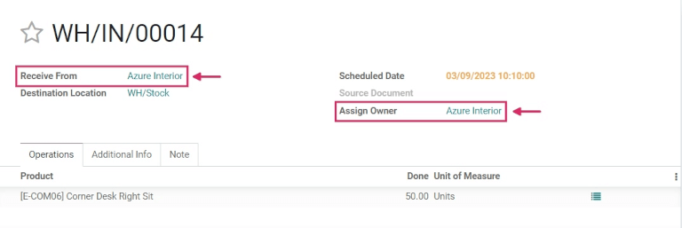

Consignación: compra y venta de mercancía sin que le pertenezca¶
La mayoría de las veces una empresa solo tiene en su almacén productos que compró de un proveedor, o que ellos mismos fabricaron. Sin embargo, de vez en cuando los proveedores guardan y venden sus productos dentro del almacén de una empresa sin vendérselos. A esta práctica se le llama consignación.
La consignación es un método muy útil cuando los proveedores van a lanzar un producto nuevo y quieren entregarlo fácilmente a sus clientes. También es una excelente manera para que la empresa que está almacenando los productos (el consignado) obtenga una compensación por sus esfuerzos. Los consignados pueden hasta cobrar una tarifa por guardar los productos que en realidad no les pertenecen.
Activar la configuración de consignación¶
Para recibir, almacenar y vender bienes en consignación, primero debe activar la opción en los ajustes. Para hacerlo, vaya a y en la sección de Trazabilidad y seleccione el recuadro junto a Consigna.

Reciba (y almacene) inventario consignado¶
Ya que activó la función en Odoo podrá recibir productos consignados en el almacén. En el tablero principal de haga clic en la sección menuselection:Recibos y después en menuselection:Crear.
Nota
Los bienes consignados no se compran al proveedor, solo se reciben y se guardan, por lo que no habrá cotizaciones u órdenes de compras. Por lo tanto, todas las recepciones de existencias consignadas e iniciarán con la creación de recepciones manuales.
Seleccione el proveedor que le entrega los productos en el campo Recibir de e inserte el mismo proveedor en el campo Asignar propietario.
Importante
Ya que los productos le pertenecerán al proveedor que los mandó, los campos Recibir de y Asignar propietario deben coincidir.
Después de haber llenado los campos relacionados al proveedor, ingrese los productos en las líneas de producto e indique las cantidades que recibió en el almacén en la columna Hecho. Si activó la función Unidades de medida también podrá cambiar las unidades de medida. Ya que recibió todos los bienes, debe validar la recepción.
Vender y entregar bienes consignados¶
Ya que recibió los artículos consignados en el almacén, puede venderlos de la misma manera en la que vende cualquier otro producto que tenga en existencias para el que haya seleccionado la opción Se puede vender en el formulario del producto
Para crear una orden de venta primero debe ir a la aplicación . En el tablero de Cotizaciones haga clic en Crear y elija un cliente que ingresar en el campo Cliente.
Nota
El cliente no puede ser el mismo que el proveedor que le dio los productos en consignación.
En la columna Producto agregue el producto consignado, indique la Cantidad y llene los detalles de producto pertinentes en el formulario. Ya que completó la cotización, haga clic en Confirmar.

La solicitud de cotización se convertirá en una orden de venta una vez que la haya confirmado. Desde este formulario puede entregar los productos, solo tiene que hacer clic en el botón inteligente Entrega y después en Validar para validar la entrega.
Trazabilidad y reportes de las existencias consignadas¶
Los productos consignados aparecerán en algunos reportes de inventario aunque el propietario de estos productos sea el proveedor y no la empresa que los está almacenando
Para encontrar reportes de inventario vaya a y seleccione un reporte que ver.
Nota
Como el consignado no es el propietario de los productos consignados, estos productos no se ven reflejados en el reporte de Valoración de existencias y no tienen impacto en la valoración de inventario del consignado
Reportes de movimiento de productos¶
Para ver toda la información sobre los movimientos de existencias disponibles, vaya al tablero Movimientos de productos en . Para los productos de consigna, la información de este reporte es la misma que la de cualquier otro producto: se puede revisar el historial de sus movimientos de producto; están disponibles los documentos Cantidad hecha y Referencia; y también están disponibles sus Ubicaciones. Las existencias de consigna se generará a partir de la Ubicación del partner/proveedor.
Truco
Para ver los movimientos de un producto de consigna por propietario, seleccione el filtro Agrupar por, elija el parámetro Agregar grupo personalizado, seleccione Del propietario y Aplicar para terminar.

Truco
Para ver las unidades pronosticadas de existencias de consigna, vaya a .
Reporte de existencias disponibles¶
Para ver el tablero de existencias disponibles, vaya a . En este reporte se muestran las ubicaciones de todas las existencias disponibles, además de las cantidades por ubicación. Para los productos de consigna, la columna Propietario se completará con el propietario de dichos productos, o con el proveedor original que suministró los productos.